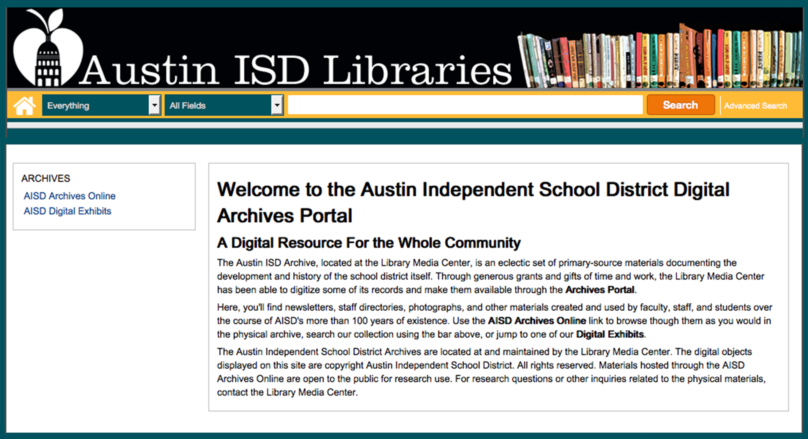
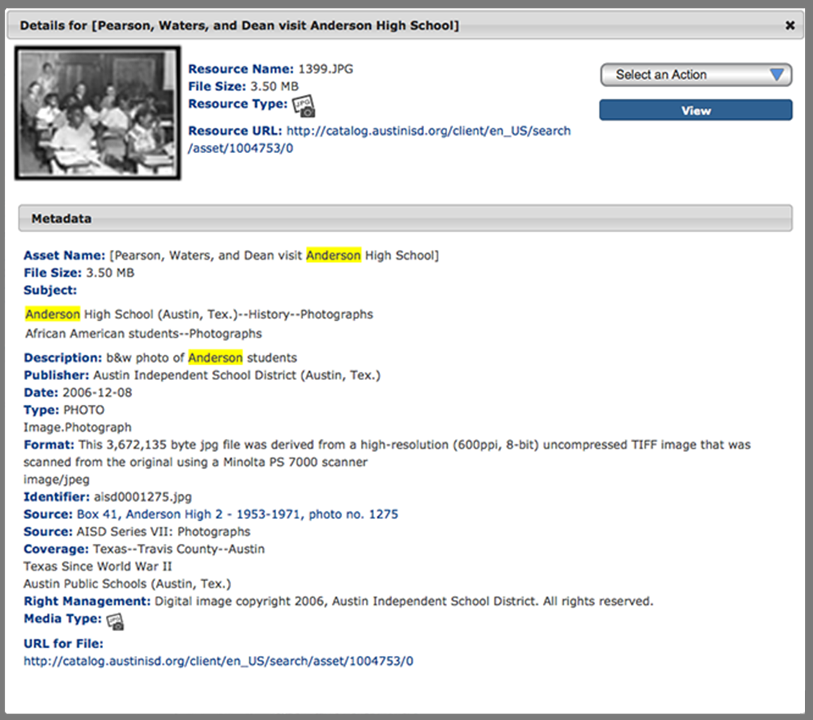
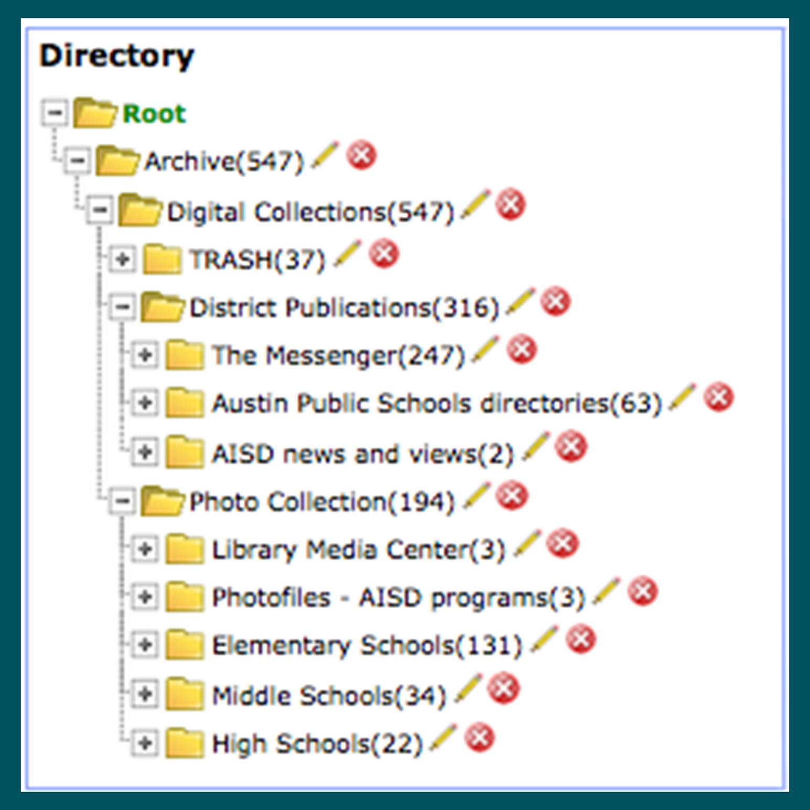
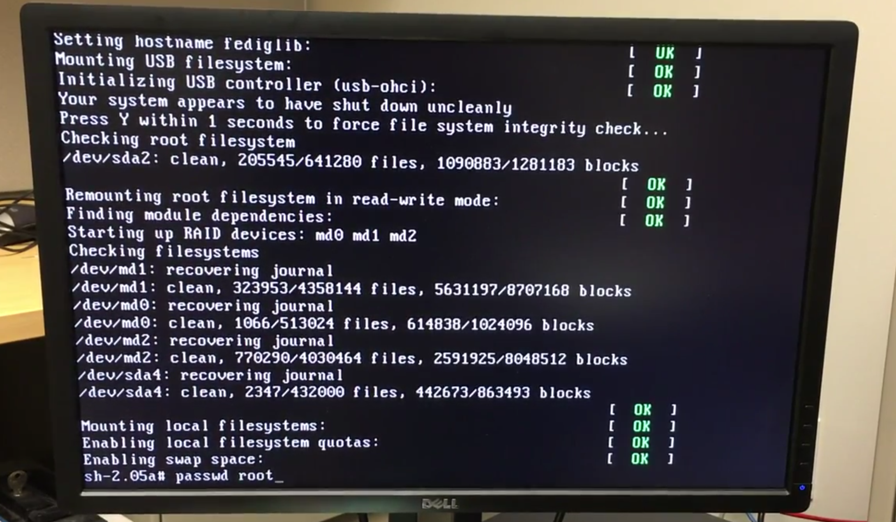
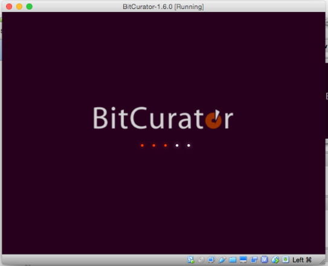

Structuring the Past: Designing the AISD Digital Archive


Summer 2016
The Austin Independent School District has provided public education to the citizens of Austin and Travis County for over a century: its history is documented in its archive, held with the professional library in the Library Media Center and unfortunately underutilized. Funded by a grant, hundreds of photographs, serials, and district publications were digitized: when the grant period ended, however, the project stalled. Though some materials were available online through their Digital Asset Management System, Portfolio, the archive had no entry point.
The objective of this project was to optimize the digital archive: enhancing discoverability, structuring the archival materials, creating a patron portal, and providing documentation for further work. Through discussions with the LMC staff, I assessed the state of the digital archive, determined best practices for metadata capture, and designed an extensible collection structure to display the materials online. Addressing the differences between the previous metadata format (MARC21) and Dublin Core, I created a database for metadata capture, built corresponding metadata templates in the DAMS, and wrote a usage guide for the cataloger. Working with Portfolio, I structured the display of materials and designed a patron portal, providing multiple access points to the archive— in finding aid order, digital exhibits, and through subject search links— and documenting the logic in a design brief. The AISD Archives Online is now structured to provide both casual patrons and experienced researchers with easy access to more than one hundred years of Austin history, and the LMC staff have the tools they need to continue developing and adding to the digital archive.

Spring 2016Digital archiving and archaeology project centered on a legacy (circa 2001) server;
led research and experiments; helped draft recommendations for future infrastructure procedures; presented
a digital poster and hands-on technology demonstration; project documentation viewable here.
|
April 2016As part of the UT Digital Preservation Symposium,
I presented a lightning talk with slides, aimed at the digital asset management and preservation community
demonstrating use cases and commands for using the DSpace batch uploading utility at the command line. Using this utility requires not just access to the server, but root, something to consider.
|

Spring 2016Coordinated with group members for installation, testing, and use prior to class
presentation; created video walkthroughs and step-by-step exercises for an introductory workshop on BitCurator for archives, including installation scenarios, use cases, and hands-on exercises.
|
 Fall 2015
Fall 2015Collaborated with a group in processing and arranging approximately 10 cubic feet of archival material,
including appraisal report and processing plan, EAD finding aid, and physical arrangement. For the H.J. Lutcher Stark Center.
Finding aid available via Texas Archival Resources Online.
|